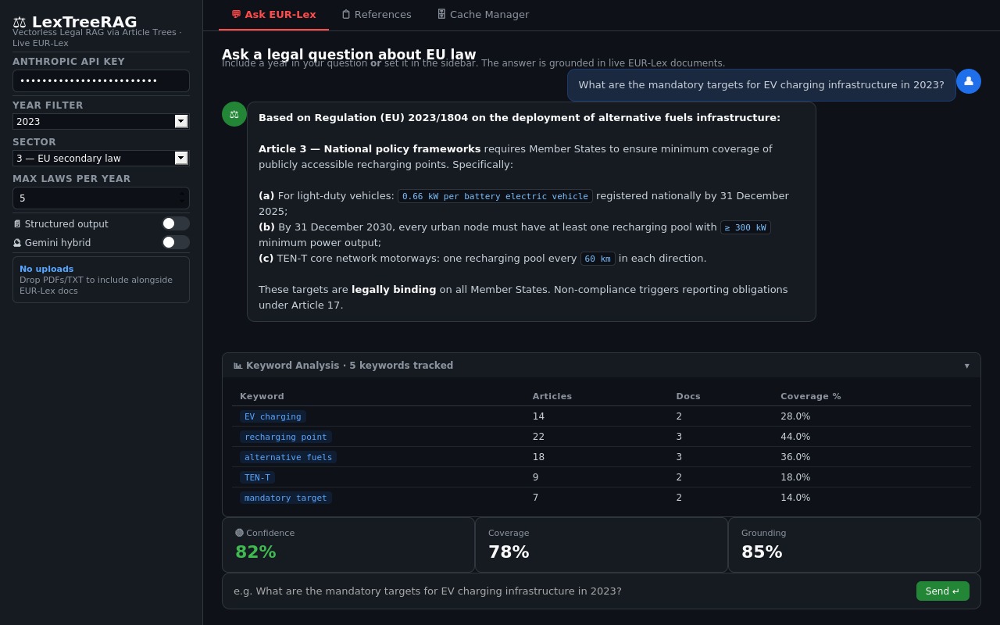

Chat — Ask EUR-Lex¶

Ask EUR-Lex tab — question input, streamed answer, keyword analysis table, and confidence metricsThe main interface. Type a legal question, get a cited answer grounded in live EUR-Lex documents.
File: app.py — with tab_ask:
Keyword Analysis Table¶
Shown after every query in an expandable panel. Rendered as a plain HTML table.
| Column | Source | Calculation | Business meaning |
|---|---|---|---|
| Keyword | keyword_extractor.py + regex |
From extract_keywords_and_year() + _extract_exact_signals() |
Search term used to find EU regulations |
| Articles | In-memory, keyword_article_stats() in app.py |
Count of tree nodes whose text + title + summary contains the keyword (case-insensitive) |
How many article nodes mention this keyword |
| Docs | In-memory, keyword_article_stats() |
Count of distinct trees with at least one matching node | How many EUR-Lex documents mention this keyword |
| Coverage % | In-memory | round(art_hits / total_nodes * 100, 1) |
Share of all retrieved articles that mention this keyword |
Data path: st.session_state.kw_stats ← run_query()["kw_stats"] ← keyword_article_stats() in app.py
Confidence Metrics¶
Three st.metric() cards shown after every answer.
| Metric | Calculation | Meaning |
|---|---|---|
| Confidence | round(0.4 × coverage + 0.6 × grounding) |
Overall answer quality 0–100. ≥75 high, 50–74 medium, <50 low |
| Coverage | Claude Haiku scores 0–100 | Do the retrieved articles cover all aspects of the question? |
| Grounding | Claude Haiku scores 0–100 | Are the answer's claims traceable to article text? |
Full Query Pipeline¶
1. Question classification¶
pipeline/query_classifier.py → classify_question()
- Model:
claude-haiku-4-5, max_tokens=300 - Returns:
definitional | compliance | comparison | timeline | complex | general complex→ decomposed into 2–4 sub-questions, each searched independently
2. Keyword extraction¶
pipeline/keyword_extractor.py → extract_keywords_and_year()
- Model:
claude-haiku-4-5, max_tokens=256 - Returns keywords, year, exact regulation/article signals (regex), query variants
- Obligation expansion: if question contains
requir,document,mandatory... → injects["shall", "required", "obligation"]
3. EUR-Lex SPARQL search¶
pipeline/eurolex_client.py → search_eurlex()
SPARQL endpoint: https://publications.europa.eu/webapi/rdf/sparql
Four-pass strategy:
| Pass | Strategy | Purpose |
|---|---|---|
| 0 | AND: domain term + topic term | Vehicle-specific regulations |
| 1 | OR: specific (low-noise) keywords | Main keyword match |
| 2 | OR: all keywords including noisy | Fallback |
| 3 | Drop sector filter | Last resort, widest coverage |
4. Document fetch¶
pipeline/eurolex_client.py → fetch_documents_parallel(max_workers=3)
Per document:
- Check local PDF archive (
data/pdfs/{year}/{celex}.pdf) - Resolve SPARQL expression slot number
- Try PDF at discovered slot
- Try PDF at default slot 0001
- Try HTML → Markdown conversion
5. Reasoning tree build¶
pipeline/tree_builder.py → build_tree()
- Cache check:
data/cache/{year}/{celex}.json→ return immediately if found - Parse articles with regex
_ART_HEADER+_ANNEX_HEADER - Articles > 5,000 chars → sub-chunked into ~3,000-char parts
- No Article headers → paragraph fallback chunking
- Claude Haiku generates 1-sentence summary per article (batches of 12)
6. Tree navigation¶
pipeline/tree_navigator.py → navigate_tree()
- Builds slim tree: only summaries +
[OBL]/[LIST]badges, no full text - Claude Haiku scores articles 0–10, discards < 4
- Parent node selected → all sub-nodes included automatically
7. Citation link following¶
pipeline/eurolex_client.py → follow_citation_links()
- Regex-extracts EU act citations from selected article texts
- Fetches up to 3 linked documents not already in tree set
- Re-navigates if new documents added
8. Python reranking¶
pipeline/clause_ranker.py → rerank_nodes()
obligation_score: countsshall,must,required to, etc. on original textlist_score: counts(a)(b)(c), numbered items, table rows, dash listspenalty = -4.0if title is "scope/definitions/subject-matter" AND no obligation keywords
9. Answer generation¶
app.py → answer_stream() / answer_structured()
- Model:
claude-opus-4-6, max_tokens=4096,thinking: {"type": "adaptive"} - Prose mode: streaming, 8-rule system prompt (cite exact provisions, no speculation, self-check)
- Structured mode: returns JSON
{summary, obligations, rights, definitions, exceptions, procedure, references, caveats}
10. Confidence scoring + retry¶
pipeline/answer_verifier.py → compute_confidence()
- Model:
claude-haiku-4-5, max_tokens=400 - If score < 50 or coverage < 40 → up to 2 automatic retries:
- Attempt 2: obligation-expanded keywords
- Attempt 3: drop year filter, expand sectors, +3 max docs
- After 3 attempts still low → keyword discovery UI shown
Session State Reference¶
| Key | Type | Description |
|---|---|---|
history |
list[dict] |
Full conversation [{role, content, references, meta}] |
references |
list[dict] |
Last answer's article references |
kw_stats |
list[dict] |
Keyword analysis rows |
prev_selected_nodes |
list[dict] |
Nodes from last answer (conversation memory) |
upload_trees |
list[dict] |
Trees built from user-uploaded files |
structured_mode |
bool |
JSON output vs. prose streaming |